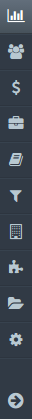
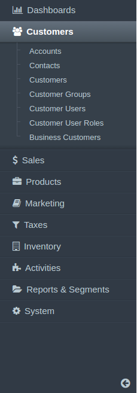
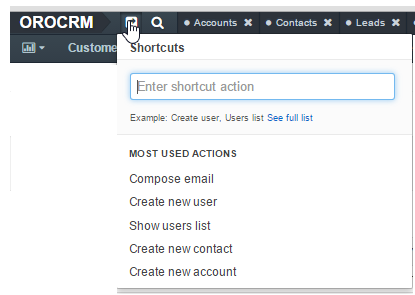
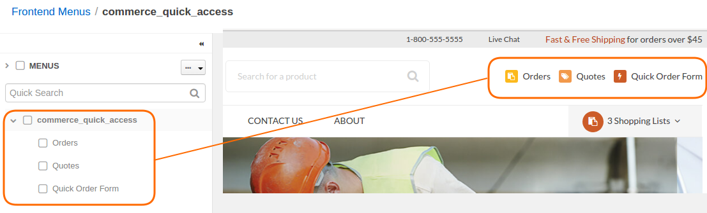
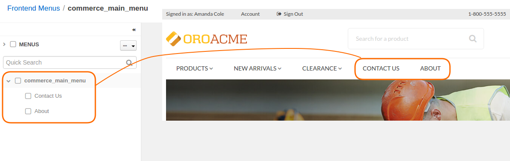

Overview¶
OroCRM and OroCommerce Management Console Menus¶
Navigation Bar¶
The application_menu is the main menu of the Management Console in Oro application. It resides on the top of every application page and you can use it to navigate through Oro application. Subject to configuration, it may be displayed horizontally or vertically. To toggle the way it is displayed, navigate to the System > Configuration section using the main menu, and open System configuration > General Setup > Display Settings in the panel to the left. In the Navigation Bar section, unselect the Use Default option and select the Top or Left position.
In the latter case, the menu items are displayed as icons. For more information, see Main Menu.
In a top position, Application Menu (Navigation Bar) looks like a top menu with a drop-down sub-menus that expand once you hover over the parent item:

In a left position, Application Menu (Navigation Bar) may be collapsed into the icon bar:
or expanded for visible labels and sub-menu items:
Shortcuts¶
You can find shortcuts menu in the top panel of the application, next to the organization name.
It helps you pin the frequently used actions and have them handy. You can launch an action by clicking it in the dynamically generated Most Used Actions list. This list is updated as you are using the system, and will initially contain the actions that you use the most.
To access other shortcuts, click See the full list to see complete list of shortcut items or use search: start typing the name of a related entity or an action to choose from a list of matching items.

OroCommerce Front Store Menus¶
Quick Access¶
A commerce_quick_access menu provides quick access to the most frequent or important actions.
Navigation Bar¶
A commerce_main_menu defines the static content of the OroCommerce Front Store main menu. The leading part of the menu is generated based on the structure of the website web catalog or master catalog. The trailing part is composed of the commerce_main_menu items.
User and Account Menu Look and Feel¶
Front store user menu is customizable via the Customer User Menu and Account Menu, and the way it is displayed can be configured globally, on organization, and website levels.

To configure user menu globally:
- Navigate to System > Configuration in the main menu.
- Click Commerce > Design > Theme in the panel on the left.
- In the Menu Templates section you have the following templates for user menu - Show all items at once (the default template) and Show subitems in a popup.
To configure user menu on the organization level:
- Navigate to the system configuration (click System > User Management > Organization in the main menu).
- For the necessary organization, hover over the More Options menu to the right of the necessary organization and click to start editing the configuration.
- Select Commerce > Design > Theme in the menu to the left.
- In the Menu Templates section you have the following templates for user menu - Show all items at once (the default template) and Show subitems in a popup.
To configure user menu on the website level:
- Navigate to the system configuration (click System > Websites in the main menu).
- For the necessary website, hover over the More Options menu to the right of the necessary website and click to start editing the configuration.
- Select Commerce > Design > Theme in the menu on the left.
- In the Menu Templates section you have the following templates for user menu - Show all items at once (the default template) and Show subitems in a popup.
Note
When Show all items at once is selected, the user menu has the following look in the front store:
When Show subitems in a popup is selected, the user menu has the following look in the font store: